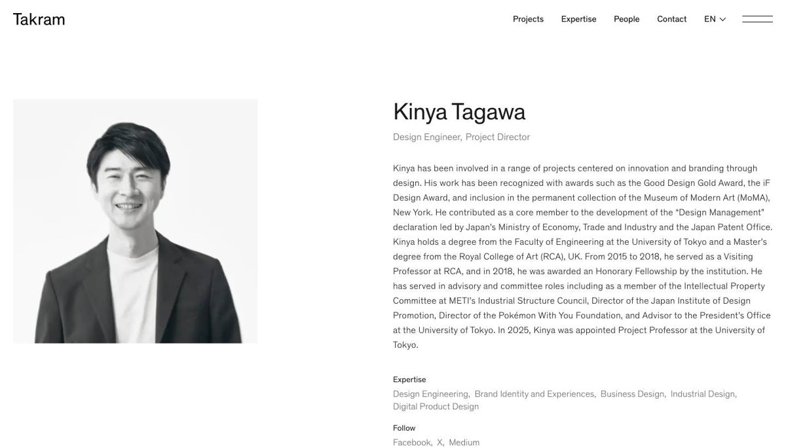
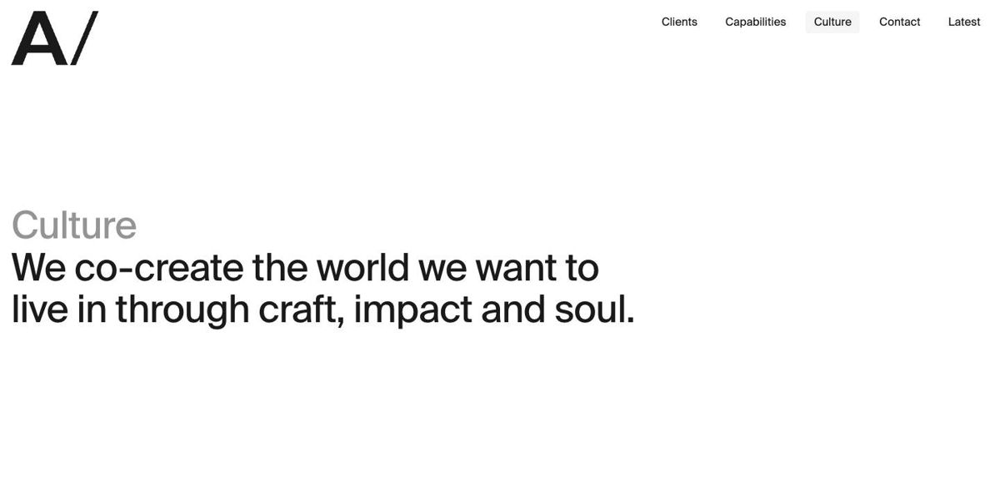
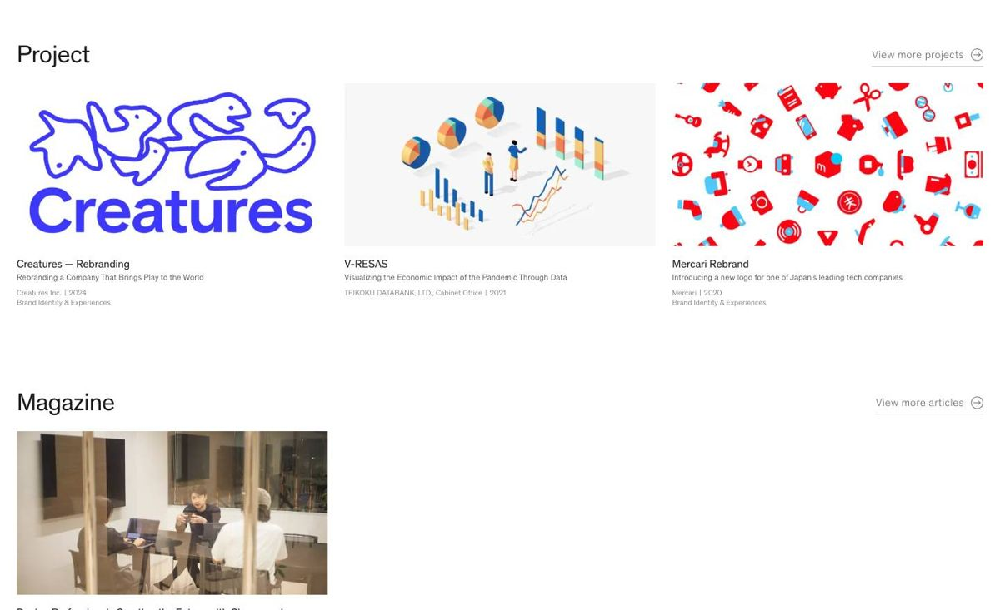
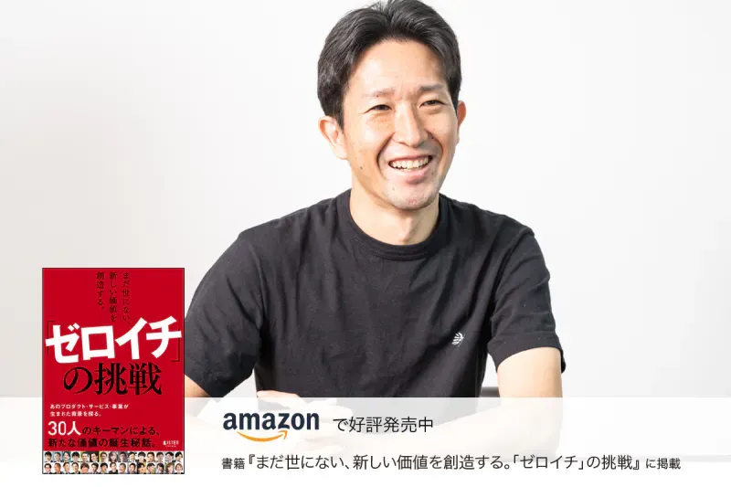
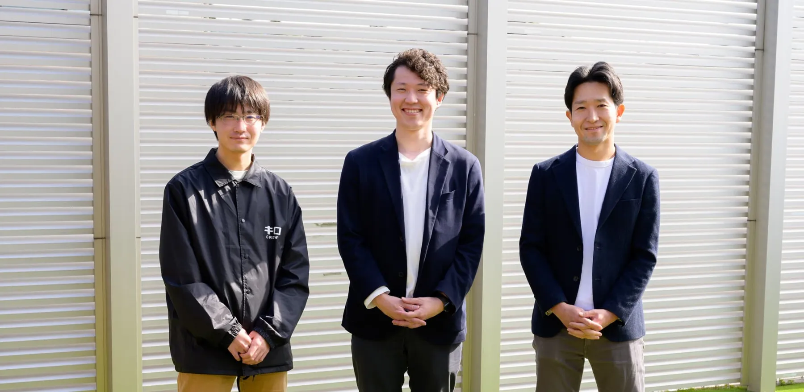
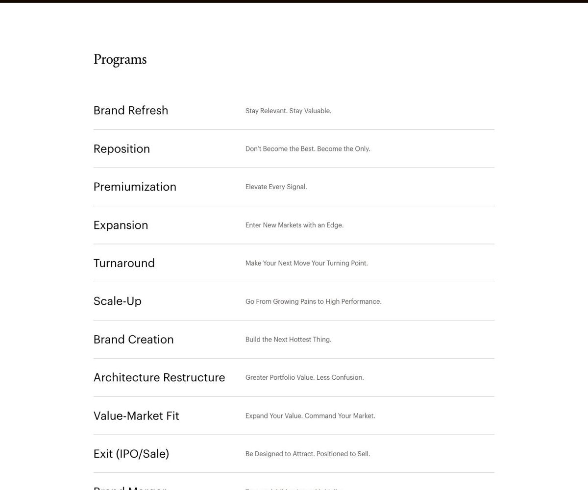
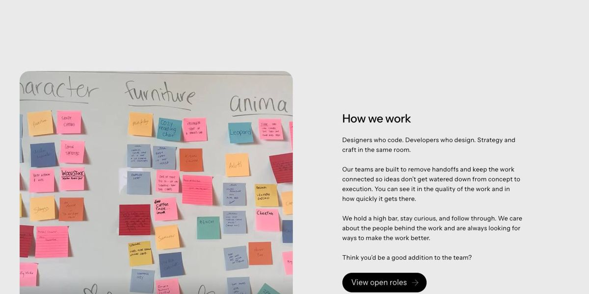
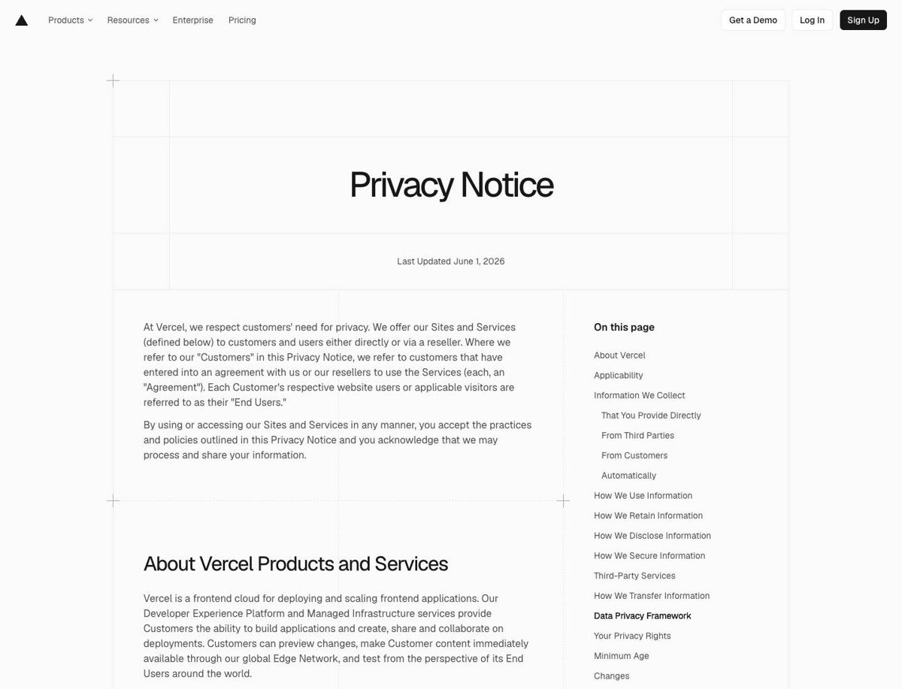
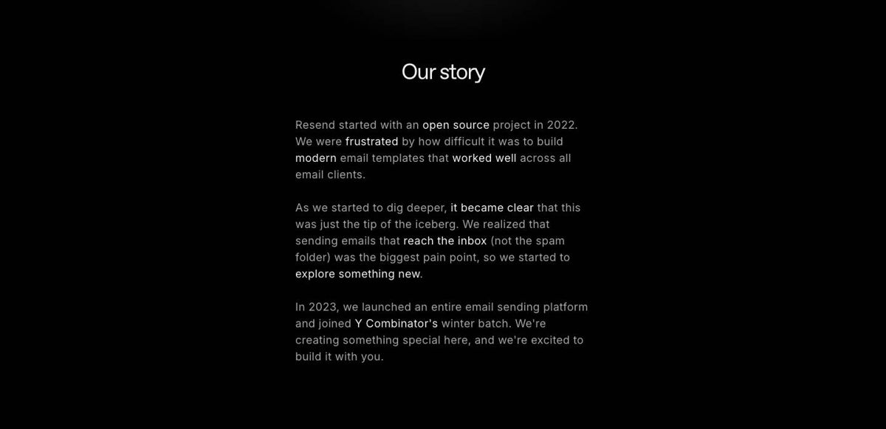
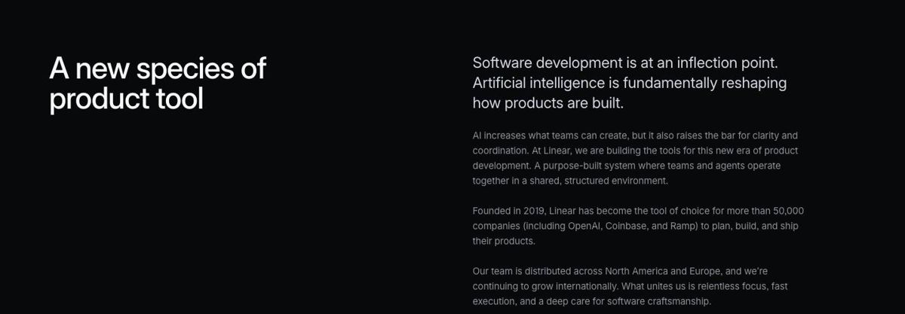

1生成りに顔写真、右に名前と経歴参考：Takram の人物ページ

Takram「Kinya Tagawa」明るい地の左に顔写真、右に名前と紹介文。
→ そのままの組み方で、地を生成りに。

Hashimoto Keiji
橋本 圭司
大手通信会社での営業、新規事業の事業企画、Webコンサル会社でのマーケティングコンサルタントの経験を元に、BizDev・マーケティング領域のコンサルタントとして業種・規模様々な企業の事業推進に携わる。
2白地の中央に丸い顔写真、名前、経歴参考：Collins「Rewrite your worth.」
中央に要素を1つずつ、余白を広く。
→ 写真・名前・経歴を中央に縦に。
橋本 圭司
Hashimoto Keiji
大手通信会社での営業、新規事業の事業企画、Webコンサル会社でのマーケティングコンサルタントの経験を元に、BizDev・マーケティング領域のコンサルタントとして業種・規模様々な企業の事業推進に携わる。
3英語名を大きく、右端に小さな顔写真参考：AREA 17 About「Culture」

AREA 17 About小さなラベルと大きめの文字、余白を広く。
→ 英語名を大きく、写真は右端に小さく。下に漢字名と経歴の2列。
Member
Hashimoto Keiji
橋本 圭司
大手通信会社での営業、新規事業の事業企画、Webコンサル会社でのマーケティングコンサルタントの経験を元に、BizDev・マーケティング領域のコンサルタントとして業種・規模様々な企業の事業推進に携わる。
1写真つきの2枚のカードを横に参考：Takram 人物ページの「Project」

Takram「Project」関わった仕事を写真つきのカードで並べる。
→ 2件を同じ寸法で。英語の種類ラベル（Book／Case study）だけ足す。

Book
書籍『まだ世にない、新しい価値を創造する。「ゼロイチ」の挑戦』
書籍出版記念インタビュー記事

Case study
「マーケター活用で広告効果が170％アップ。
蓄積された知見を基にデジタルマーケ内製化を目指す」
株式会社WACUL様の事例紹介記事
2白地に1件1行、右に小さな写真参考：Collins About「Programs」の行

Collins About細い線の行に名前と説明。
→ 題名を大きめに、写真は右に小さく。
31件ずつ、大きな写真と題名を左右に参考：Instrument About「How we work」

Instrument About写真と文を左右に大きく。
→ 2件を縦に積む。
Book
書籍『まだ世にない、新しい価値を創造する。「ゼロイチ」の挑戦』
書籍出版記念インタビュー記事
Case study
「マーケター活用で広告効果が170％アップ。
蓄積された知見を基にデジタルマーケ内製化を目指す」
株式会社WACUL様の事例紹介記事
1左に見出し、右に本文参考：Pentagram About
 Pentagram About
Pentagram About左に題、右に本文の2列。
→ 本文を少し大きめに。
DT設立（2018年5月）から6年
田村がアーティスト、私がマーケターとして前身を続けて行く中で、より個の力を伸ばしていくことが最高到達点を高めるとの思いから、私がDTを離れてサムライスタイル株式会社を設立しました。DTでの活動を通じて出会った若い仲間とともに、自身の経験を伝えながらチームとしての力も高めていきます。
2白地の中央に明朝参考：Collins「Rewrite your worth.」
Collins
中央にセリフ体の一文。
→ 見出しと本文を明朝で中央に。
DT設立（2018年5月）から6年
田村がアーティスト、私がマーケターとして前身を続けて行く中で、より個の力を伸ばしていくことが最高到達点を高めるとの思いから、私がDTを離れてサムライスタイル株式会社を設立しました。DTでの活動を通じて出会った若い仲間とともに、自身の経験を伝えながらチームとしての力も高めていきます。
3見出しの「2018」と「6」だけ大きな数字に参考：Instrument About「20 Years」
 Instrument About
Instrument About細く大きな数字で年数を見せる。
→ 見出しにある数字だけを大きく、間に1本の線。線の先に水色の点。
20186
DT設立（2018年5月）から6年
田村がアーティスト、私がマーケターとして前身を続けて行く中で、より個の力を伸ばしていくことが最高到達点を高めるとの思いから、私がDTを離れてサムライスタイル株式会社を設立しました。DTでの活動を通じて出会った若い仲間とともに、自身の経験を伝えながらチームとしての力も高めていきます。
1白地に明朝の本文、右に章の目次（今読んでいる章に印）参考：Vercel のページ内目次

Vercel のページ内目次長い文の右に、留まる目次。
→ 本文は明朝で1行を短めに。目次の今の章に水色の細い線。スマホは目次を隠す。
就活、就職
「何か面白いことをやりたい、ワクワクするような仕事がしたい」
社会に出る前の就活期、漠然とそんなことを考えていました。中学で早稲田実業に入った私は大学受験のない自由な環境で学生生活を過ごし、周りの友人は学生起業や音楽活動など、すでに自分のやりたいことを見つけて前進していました。
そんな中で、特に私の目に楽しそうに映ったのはベンチャーで、それはまるで文化祭の準備をするような高揚感の中で仕事をしているように感じました。一方で私は「いい中学に入っていい大学に進み、いい会社に就職する」程度にしか考えておらず、就活時期当時は起業するようなスキルもアイディアも持ち合わせていませんでした。そんな状況下で、私は当時起業家としてのイメージを抱いていた孫さんへの憧れからソフトバンクに入社します。
成長、挫折
新卒で入社したソフトバンクは10年勤め、その中では新規事業の事業企画に4年間携わるなど貴重な経験ができるとともに、これまでのキャリアでのターニングポイントがありました。営業時代に一定の実績を残し、社内公募での抜擢を経てチャレンジした新規事業において、求められるスキルが変わり苦戦して自信を失い、在籍期間10年の最後の半年は休職していました。休職に至るまでには、会社組織の中では私が目指していた部署全体を大きくすべきという全体最適ではなく、目先の出世という部分最適が時に評価を得るといった経験（後に多面的に状況を捉えられていなかったことが原因だったと気が付きます）、一時期仕事を共にした社外の方の「プロセスとして楽しむことより圧倒的に目的達成にフォーカスする」価値観などに触れて、私の中での自身のあるべき姿が揺らいでいました。
恩人、転機
平日の昼間から家の近くの公園で時間を過ごし、自身の先行きをネガティブに考え始めていた時、新規事業での顧客として大変お世話になった特別支援学校の全国校長会トップの先生から食事のお誘いをいただきました。当時休職していた私は公的には関わりを持つことが難しいことをお伝えし、お誘いを固辞しましたが、先生からの返答は「ソフトバンクの橋本でなく、個人の橋本に会いたい。力を貸してほしい」という内容でした。それまで親からの期待、会社からの期待、目の前にいる顧客の期待に応えるために仕事をしてきた私にとって、「子どもたちのために」と熱く語る先生により私の価値観は根底から揺るがされました。
そして、その先生のビジョンのために自分に何ができるのか？考え抜いて行き着いた答えは、点と点で人を動かす営業の仕事ではなく、面で人を動かす、世の中に広めたいものを届けたい人に対してより広範囲に広めていく仕事、マーケティングでした。事を成すには草の根の活動をする人と、それを広げるために広報する人の双方が必要で、自分にできることは後者なのではないかと考えました。ドロップアウトしそうな状況を乗り越え、「人の思いを伝える力になりたい」「マーケティングの素養を身に付けたい」このような思いを軸に転職活動を始めます。
転職、起業
その後、知人の紹介でウェブマーケティングの会社へ転職します。事業企画を行った際に感じた、サービスを立て付けても、そのサービスを伝えること、マーケティングができなければ事業やビジョンは向かいたい方向に向かえないという課題感から、マーケティングの仕事についた私は実務を通してマーケティングとは何か？を必死に吸収していきました。
この会社では、クライアントのサイトへの流入をいかに増やすかということに軸を置いたサービスを提供していたのですが、事業会社に10年いた私の経験上、また、クライアントへのサービス提案を通じて、クライアントの事業観点では、あくまで売上を上げることが目的であるはずで、サイトへの流入に加えて流入後の行動（コンバージョン）までを通して提案できなければ、サービスに掛かる費用に対する効果が明確化できないことが課題だと感じました。企業のマーケティング投資が加速することは人と人、人とモノにおける情報伝達が最適化されていくことに繋がると感じたため、流入から行動までを通したサービスを立て付けることを社内起案しました。その過程では、泊りで豪華社有船上で社長にプレゼンの機会をもらうなど紆余曲折を経て、サービス化することができました。
そして転職してから一年ほど経った頃、早実時代の友人から一本の電話がありました。
「会社の作り方を調べておいてほしい」
私がベンチャーを志すきっかけとなった、学生起業していた友人からの連絡で高揚し、起業の手続きを調査しつつ、言われるままに翌週新宿のカフェに向かいました。肝心の友人は遅刻してきましたが、そこで出会ったのがアーティストの田村大でした。そこでは彼の描いた言語化できない圧倒的迫力を誇る原画の数々と、「絵を通じて人々に夢のような時間を届けたい」というビジョンに強く心を動かされます。この時にはまだ自身で向かう先の具体的なイメージ（目的）を持てていませんでしたが、「目的はともかく、彼と一緒に事業ができることにワクワクする」と感じた私は田村と一緒に会社を設立します。
独立、教育
サラリーマンを傍で行いながらのスタートでバタつきましたが、2019年3月にウェブマーケティングの会社を退職して独立し、マーケティングのコンサルティングを受託しながらDTのCMOとして田村大の作品を世の中に広める仕事を行う日々が始まります。その中の一社が全国に明光義塾を2,000教室展開している明光ネットワークジャパン様で、「教育でもっといい世界」を目指す若き新規事業責任者の方に共感し、DTとして最初のコンサルティング業務をお受けすることになりました。
教育に向き合うことは子どもたちが活躍する未来を見据えて、今身に付けるべきスキル、必要な経験は何か？を考えることであり、未来の社会の在り方を探求することが強く求められます。よりよい未来を作っていくために必要なスキルとは、ボーダーレス化が進む環境の中で多様性を受け入れ、コラボレーションして新しい価値を生み出す力、AIなど技術発展が進む中で自分ならではのオリジナリティなどが必要になるのではと考えています。そしてこれらの根幹にあるものが思考力ではないかと考えています。それは今目の前にあるものを正しく捉える力。これは簡単なようで、教育を始めとした様々な「常識」を持った私たちには実は非常に難しい行為です。これらを育むためにできることは何かということを教育事業では追求しているのですが、ここを突き詰める中で確信に変わりつつあるのが、アプローチは違えど、DTが目指す世界と目的地は同じであるということでした。
アートのアプローチも、新しい気付き、思考のアップデートを通じて世の中の発展を目指す。世の中の当たり前を疑うこと、正しい問いを作り出すことから始まるものだと考えるからです。
志向、目的
「考えて」「作って」「伝える」事業におけるプロセスの中で、DTにおいては田村が「作った」作品を「伝える」ことが現在の私の主なミッションですが、今後は教育事業を通じて見据えるよりよい未来から逆算し、今社会に発信すべき問いは何か？という「考える」部分にも携わりたいと思っています。
問いの一例として、先述の校長先生をきっかけに関わらせていただいた特別支援教育、その出口として障がい者には就労の課題があります。現状は働く意欲のある障がい者が多くいる一方で社会制度や受け入れる企業のマインドにある課題が大きく、健常者と障がい者、言葉では二元化される思考のバリアを解いていく必要があると感じています。
繰り返しになりますが、グローバル化、技術進化がますます加速する中で、人に求められるのは思考のアップデートだと考えており、そのために必要な問いは何かを私なりに探求し、田村を中心とした仲間たちと発信していきたいと考えています。会社設立当時には不確かだった、事業を通じて達成したいことも明確になりました。
独立してから様々な立場にいる方、大きな実績を持つ方々と一緒に仕事をさせていただく経験を通じて、今の私ではとうてい届かない力量を持った人が多くいることは痛感しています。それでも私の中で揺るぎない自信になりつつあるのが根幹にある好奇心と熱量です。人の思いに人一倍共感し、その思いを人に繋げていくことによって、新しい価値を生み出していきたいと考えています。一個人としてできることは限られますが、仲間のスキルを掛け合わせていくことで可能性はいくらでも広げていけると強く信じています。今後も色々な人やものに関心を持って自身の世界を広げ、仲間を増やしながら、関わる事業を通じて世の中の幸福、笑顔の総量を増やしたい。そのためにマイペースで最善を尽くします。
2生成りに細い1段組み。章の頭に小さな英語の番号参考：Resend About「Our story」（組み方のみ）

Resend About「Our story」中央に細い1段組みで物語を置く。
→ 地は生成り、文字は黒。いちばん飾りのない読み物。
Chapter 01
就活、就職
「何か面白いことをやりたい、ワクワクするような仕事がしたい」
社会に出る前の就活期、漠然とそんなことを考えていました。中学で早稲田実業に入った私は大学受験のない自由な環境で学生生活を過ごし、周りの友人は学生起業や音楽活動など、すでに自分のやりたいことを見つけて前進していました。
そんな中で、特に私の目に楽しそうに映ったのはベンチャーで、それはまるで文化祭の準備をするような高揚感の中で仕事をしているように感じました。一方で私は「いい中学に入っていい大学に進み、いい会社に就職する」程度にしか考えておらず、就活時期当時は起業するようなスキルもアイディアも持ち合わせていませんでした。そんな状況下で、私は当時起業家としてのイメージを抱いていた孫さんへの憧れからソフトバンクに入社します。
Chapter 02
成長、挫折
新卒で入社したソフトバンクは10年勤め、その中では新規事業の事業企画に4年間携わるなど貴重な経験ができるとともに、これまでのキャリアでのターニングポイントがありました。営業時代に一定の実績を残し、社内公募での抜擢を経てチャレンジした新規事業において、求められるスキルが変わり苦戦して自信を失い、在籍期間10年の最後の半年は休職していました。休職に至るまでには、会社組織の中では私が目指していた部署全体を大きくすべきという全体最適ではなく、目先の出世という部分最適が時に評価を得るといった経験（後に多面的に状況を捉えられていなかったことが原因だったと気が付きます）、一時期仕事を共にした社外の方の「プロセスとして楽しむことより圧倒的に目的達成にフォーカスする」価値観などに触れて、私の中での自身のあるべき姿が揺らいでいました。
Chapter 03
恩人、転機
平日の昼間から家の近くの公園で時間を過ごし、自身の先行きをネガティブに考え始めていた時、新規事業での顧客として大変お世話になった特別支援学校の全国校長会トップの先生から食事のお誘いをいただきました。当時休職していた私は公的には関わりを持つことが難しいことをお伝えし、お誘いを固辞しましたが、先生からの返答は「ソフトバンクの橋本でなく、個人の橋本に会いたい。力を貸してほしい」という内容でした。それまで親からの期待、会社からの期待、目の前にいる顧客の期待に応えるために仕事をしてきた私にとって、「子どもたちのために」と熱く語る先生により私の価値観は根底から揺るがされました。
そして、その先生のビジョンのために自分に何ができるのか？考え抜いて行き着いた答えは、点と点で人を動かす営業の仕事ではなく、面で人を動かす、世の中に広めたいものを届けたい人に対してより広範囲に広めていく仕事、マーケティングでした。事を成すには草の根の活動をする人と、それを広げるために広報する人の双方が必要で、自分にできることは後者なのではないかと考えました。ドロップアウトしそうな状況を乗り越え、「人の思いを伝える力になりたい」「マーケティングの素養を身に付けたい」このような思いを軸に転職活動を始めます。
Chapter 04
転職、起業
その後、知人の紹介でウェブマーケティングの会社へ転職します。事業企画を行った際に感じた、サービスを立て付けても、そのサービスを伝えること、マーケティングができなければ事業やビジョンは向かいたい方向に向かえないという課題感から、マーケティングの仕事についた私は実務を通してマーケティングとは何か？を必死に吸収していきました。
この会社では、クライアントのサイトへの流入をいかに増やすかということに軸を置いたサービスを提供していたのですが、事業会社に10年いた私の経験上、また、クライアントへのサービス提案を通じて、クライアントの事業観点では、あくまで売上を上げることが目的であるはずで、サイトへの流入に加えて流入後の行動（コンバージョン）までを通して提案できなければ、サービスに掛かる費用に対する効果が明確化できないことが課題だと感じました。企業のマーケティング投資が加速することは人と人、人とモノにおける情報伝達が最適化されていくことに繋がると感じたため、流入から行動までを通したサービスを立て付けることを社内起案しました。その過程では、泊りで豪華社有船上で社長にプレゼンの機会をもらうなど紆余曲折を経て、サービス化することができました。
そして転職してから一年ほど経った頃、早実時代の友人から一本の電話がありました。
「会社の作り方を調べておいてほしい」
私がベンチャーを志すきっかけとなった、学生起業していた友人からの連絡で高揚し、起業の手続きを調査しつつ、言われるままに翌週新宿のカフェに向かいました。肝心の友人は遅刻してきましたが、そこで出会ったのがアーティストの田村大でした。そこでは彼の描いた言語化できない圧倒的迫力を誇る原画の数々と、「絵を通じて人々に夢のような時間を届けたい」というビジョンに強く心を動かされます。この時にはまだ自身で向かう先の具体的なイメージ（目的）を持てていませんでしたが、「目的はともかく、彼と一緒に事業ができることにワクワクする」と感じた私は田村と一緒に会社を設立します。
Chapter 05
独立、教育
サラリーマンを傍で行いながらのスタートでバタつきましたが、2019年3月にウェブマーケティングの会社を退職して独立し、マーケティングのコンサルティングを受託しながらDTのCMOとして田村大の作品を世の中に広める仕事を行う日々が始まります。その中の一社が全国に明光義塾を2,000教室展開している明光ネットワークジャパン様で、「教育でもっといい世界」を目指す若き新規事業責任者の方に共感し、DTとして最初のコンサルティング業務をお受けすることになりました。
教育に向き合うことは子どもたちが活躍する未来を見据えて、今身に付けるべきスキル、必要な経験は何か？を考えることであり、未来の社会の在り方を探求することが強く求められます。よりよい未来を作っていくために必要なスキルとは、ボーダーレス化が進む環境の中で多様性を受け入れ、コラボレーションして新しい価値を生み出す力、AIなど技術発展が進む中で自分ならではのオリジナリティなどが必要になるのではと考えています。そしてこれらの根幹にあるものが思考力ではないかと考えています。それは今目の前にあるものを正しく捉える力。これは簡単なようで、教育を始めとした様々な「常識」を持った私たちには実は非常に難しい行為です。これらを育むためにできることは何かということを教育事業では追求しているのですが、ここを突き詰める中で確信に変わりつつあるのが、アプローチは違えど、DTが目指す世界と目的地は同じであるということでした。
アートのアプローチも、新しい気付き、思考のアップデートを通じて世の中の発展を目指す。世の中の当たり前を疑うこと、正しい問いを作り出すことから始まるものだと考えるからです。
Chapter 06
志向、目的
「考えて」「作って」「伝える」事業におけるプロセスの中で、DTにおいては田村が「作った」作品を「伝える」ことが現在の私の主なミッションですが、今後は教育事業を通じて見据えるよりよい未来から逆算し、今社会に発信すべき問いは何か？という「考える」部分にも携わりたいと思っています。
問いの一例として、先述の校長先生をきっかけに関わらせていただいた特別支援教育、その出口として障がい者には就労の課題があります。現状は働く意欲のある障がい者が多くいる一方で社会制度や受け入れる企業のマインドにある課題が大きく、健常者と障がい者、言葉では二元化される思考のバリアを解いていく必要があると感じています。
繰り返しになりますが、グローバル化、技術進化がますます加速する中で、人に求められるのは思考のアップデートだと考えており、そのために必要な問いは何かを私なりに探求し、田村を中心とした仲間たちと発信していきたいと考えています。会社設立当時には不確かだった、事業を通じて達成したいことも明確になりました。
独立してから様々な立場にいる方、大きな実績を持つ方々と一緒に仕事をさせていただく経験を通じて、今の私ではとうてい届かない力量を持った人が多くいることは痛感しています。それでも私の中で揺るぎない自信になりつつあるのが根幹にある好奇心と熱量です。人の思いに人一倍共感し、その思いを人に繋げていくことによって、新しい価値を生み出していきたいと考えています。一個人としてできることは限られますが、仲間のスキルを掛け合わせていくことで可能性はいくらでも広げていけると強く信じています。今後も色々な人やものに関心を持って自身の世界を広げ、仲間を増やしながら、関わる事業を通じて世の中の幸福、笑顔の総量を増やしたい。そのためにマイペースで最善を尽くします。
3左に章番号と見出しを留め、右に本文参考：Linear About（左に見出し・右に文）

Linear About左に見出し、右に文の2列。
→ 地は生成りに。章ごとに罫線で区切り、番号は灰色の大きな数字。
01
就活、就職
「何か面白いことをやりたい、ワクワクするような仕事がしたい」
社会に出る前の就活期、漠然とそんなことを考えていました。中学で早稲田実業に入った私は大学受験のない自由な環境で学生生活を過ごし、周りの友人は学生起業や音楽活動など、すでに自分のやりたいことを見つけて前進していました。
そんな中で、特に私の目に楽しそうに映ったのはベンチャーで、それはまるで文化祭の準備をするような高揚感の中で仕事をしているように感じました。一方で私は「いい中学に入っていい大学に進み、いい会社に就職する」程度にしか考えておらず、就活時期当時は起業するようなスキルもアイディアも持ち合わせていませんでした。そんな状況下で、私は当時起業家としてのイメージを抱いていた孫さんへの憧れからソフトバンクに入社します。
02
成長、挫折
新卒で入社したソフトバンクは10年勤め、その中では新規事業の事業企画に4年間携わるなど貴重な経験ができるとともに、これまでのキャリアでのターニングポイントがありました。営業時代に一定の実績を残し、社内公募での抜擢を経てチャレンジした新規事業において、求められるスキルが変わり苦戦して自信を失い、在籍期間10年の最後の半年は休職していました。休職に至るまでには、会社組織の中では私が目指していた部署全体を大きくすべきという全体最適ではなく、目先の出世という部分最適が時に評価を得るといった経験（後に多面的に状況を捉えられていなかったことが原因だったと気が付きます）、一時期仕事を共にした社外の方の「プロセスとして楽しむことより圧倒的に目的達成にフォーカスする」価値観などに触れて、私の中での自身のあるべき姿が揺らいでいました。
03
恩人、転機
平日の昼間から家の近くの公園で時間を過ごし、自身の先行きをネガティブに考え始めていた時、新規事業での顧客として大変お世話になった特別支援学校の全国校長会トップの先生から食事のお誘いをいただきました。当時休職していた私は公的には関わりを持つことが難しいことをお伝えし、お誘いを固辞しましたが、先生からの返答は「ソフトバンクの橋本でなく、個人の橋本に会いたい。力を貸してほしい」という内容でした。それまで親からの期待、会社からの期待、目の前にいる顧客の期待に応えるために仕事をしてきた私にとって、「子どもたちのために」と熱く語る先生により私の価値観は根底から揺るがされました。
そして、その先生のビジョンのために自分に何ができるのか？考え抜いて行き着いた答えは、点と点で人を動かす営業の仕事ではなく、面で人を動かす、世の中に広めたいものを届けたい人に対してより広範囲に広めていく仕事、マーケティングでした。事を成すには草の根の活動をする人と、それを広げるために広報する人の双方が必要で、自分にできることは後者なのではないかと考えました。ドロップアウトしそうな状況を乗り越え、「人の思いを伝える力になりたい」「マーケティングの素養を身に付けたい」このような思いを軸に転職活動を始めます。
04
転職、起業
その後、知人の紹介でウェブマーケティングの会社へ転職します。事業企画を行った際に感じた、サービスを立て付けても、そのサービスを伝えること、マーケティングができなければ事業やビジョンは向かいたい方向に向かえないという課題感から、マーケティングの仕事についた私は実務を通してマーケティングとは何か？を必死に吸収していきました。
この会社では、クライアントのサイトへの流入をいかに増やすかということに軸を置いたサービスを提供していたのですが、事業会社に10年いた私の経験上、また、クライアントへのサービス提案を通じて、クライアントの事業観点では、あくまで売上を上げることが目的であるはずで、サイトへの流入に加えて流入後の行動（コンバージョン）までを通して提案できなければ、サービスに掛かる費用に対する効果が明確化できないことが課題だと感じました。企業のマーケティング投資が加速することは人と人、人とモノにおける情報伝達が最適化されていくことに繋がると感じたため、流入から行動までを通したサービスを立て付けることを社内起案しました。その過程では、泊りで豪華社有船上で社長にプレゼンの機会をもらうなど紆余曲折を経て、サービス化することができました。
そして転職してから一年ほど経った頃、早実時代の友人から一本の電話がありました。
「会社の作り方を調べておいてほしい」
私がベンチャーを志すきっかけとなった、学生起業していた友人からの連絡で高揚し、起業の手続きを調査しつつ、言われるままに翌週新宿のカフェに向かいました。肝心の友人は遅刻してきましたが、そこで出会ったのがアーティストの田村大でした。そこでは彼の描いた言語化できない圧倒的迫力を誇る原画の数々と、「絵を通じて人々に夢のような時間を届けたい」というビジョンに強く心を動かされます。この時にはまだ自身で向かう先の具体的なイメージ（目的）を持てていませんでしたが、「目的はともかく、彼と一緒に事業ができることにワクワクする」と感じた私は田村と一緒に会社を設立します。
05
独立、教育
サラリーマンを傍で行いながらのスタートでバタつきましたが、2019年3月にウェブマーケティングの会社を退職して独立し、マーケティングのコンサルティングを受託しながらDTのCMOとして田村大の作品を世の中に広める仕事を行う日々が始まります。その中の一社が全国に明光義塾を2,000教室展開している明光ネットワークジャパン様で、「教育でもっといい世界」を目指す若き新規事業責任者の方に共感し、DTとして最初のコンサルティング業務をお受けすることになりました。
教育に向き合うことは子どもたちが活躍する未来を見据えて、今身に付けるべきスキル、必要な経験は何か？を考えることであり、未来の社会の在り方を探求することが強く求められます。よりよい未来を作っていくために必要なスキルとは、ボーダーレス化が進む環境の中で多様性を受け入れ、コラボレーションして新しい価値を生み出す力、AIなど技術発展が進む中で自分ならではのオリジナリティなどが必要になるのではと考えています。そしてこれらの根幹にあるものが思考力ではないかと考えています。それは今目の前にあるものを正しく捉える力。これは簡単なようで、教育を始めとした様々な「常識」を持った私たちには実は非常に難しい行為です。これらを育むためにできることは何かということを教育事業では追求しているのですが、ここを突き詰める中で確信に変わりつつあるのが、アプローチは違えど、DTが目指す世界と目的地は同じであるということでした。
アートのアプローチも、新しい気付き、思考のアップデートを通じて世の中の発展を目指す。世の中の当たり前を疑うこと、正しい問いを作り出すことから始まるものだと考えるからです。
06
志向、目的
「考えて」「作って」「伝える」事業におけるプロセスの中で、DTにおいては田村が「作った」作品を「伝える」ことが現在の私の主なミッションですが、今後は教育事業を通じて見据えるよりよい未来から逆算し、今社会に発信すべき問いは何か？という「考える」部分にも携わりたいと思っています。
問いの一例として、先述の校長先生をきっかけに関わらせていただいた特別支援教育、その出口として障がい者には就労の課題があります。現状は働く意欲のある障がい者が多くいる一方で社会制度や受け入れる企業のマインドにある課題が大きく、健常者と障がい者、言葉では二元化される思考のバリアを解いていく必要があると感じています。
繰り返しになりますが、グローバル化、技術進化がますます加速する中で、人に求められるのは思考のアップデートだと考えており、そのために必要な問いは何かを私なりに探求し、田村を中心とした仲間たちと発信していきたいと考えています。会社設立当時には不確かだった、事業を通じて達成したいことも明確になりました。
独立してから様々な立場にいる方、大きな実績を持つ方々と一緒に仕事をさせていただく経験を通じて、今の私ではとうてい届かない力量を持った人が多くいることは痛感しています。それでも私の中で揺るぎない自信になりつつあるのが根幹にある好奇心と熱量です。人の思いに人一倍共感し、その思いを人に繋げていくことによって、新しい価値を生み出していきたいと考えています。一個人としてできることは限られますが、仲間のスキルを掛け合わせていくことで可能性はいくらでも広げていけると強く信じています。今後も色々な人やものに関心を持って自身の世界を広げ、仲間を増やしながら、関わる事業を通じて世の中の幸福、笑顔の総量を増やしたい。そのためにマイペースで最善を尽くします。